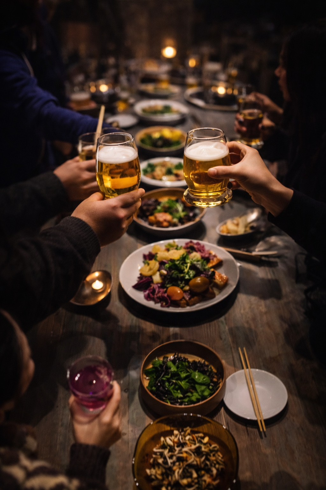
Ervaringen
Chefs Atalier Borrel
Een verfijnde en belevingsgerichte borrel aan huis, waarin hoogwaardige bites en beleving samenkomen.
Bel me terugZorgvuldig opgebouwde gerechten, geserveerd met aandacht, waarbij interactie met de chef en live afwerking zorgen voor een persoonlijke en levendige avond.
Geen standaard borrel, maar een culinaire ervaring waarin gasten worden meegenomen in smaak, presentatie en het moment.
Ideaal als start van de avond of als losse ervaring.
Wat je kunt verwachten
-
Kazen & charcuterie
Een selectie van verfijnde kazen en charcuterie.
-
Garnituren & delicatessen
Bijpassende garnituren en delicatessen.
-
Ambachtelijke bites
3, 4 of 5 ambachtelijke bites — geserveerd in meerdere rondes met opbouw in smaak.
-
Live door de chef
Live bereidingen en directe service door de chef.
-
Interactie
Interactie en korte toelichting bij gerechten.
Maak van een borrel moeiteloos een complete avond.
Perfect voor
Jubileum
21 diner
Vrijgezellenfeest
Verjaardag
Filosofie
Wij werken vanuit een no waste filosofie, waarbij elk product maximaal wordt benut en creativiteit en duurzaamheid samenkomen in elk gerecht.
Sfeerbeelden
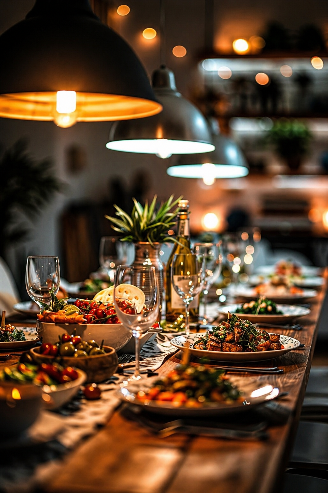
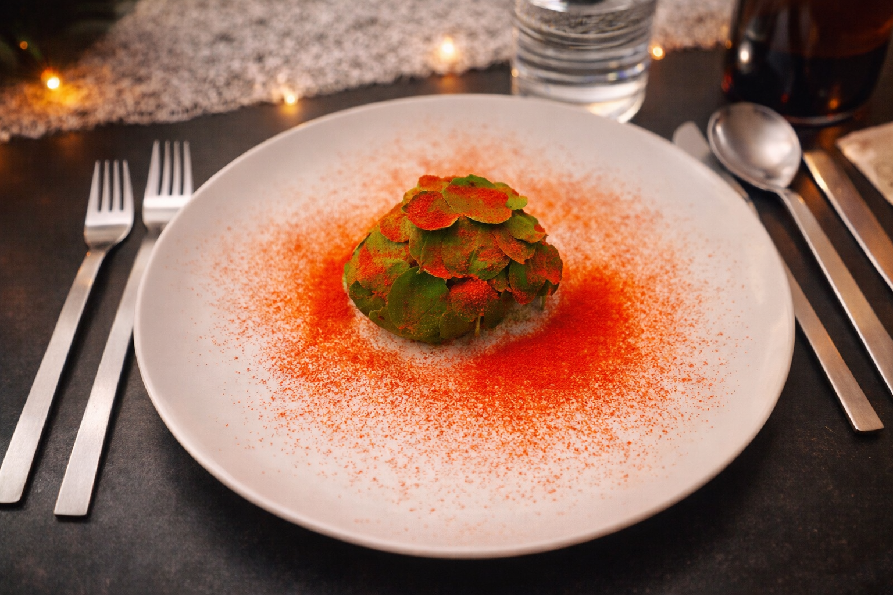
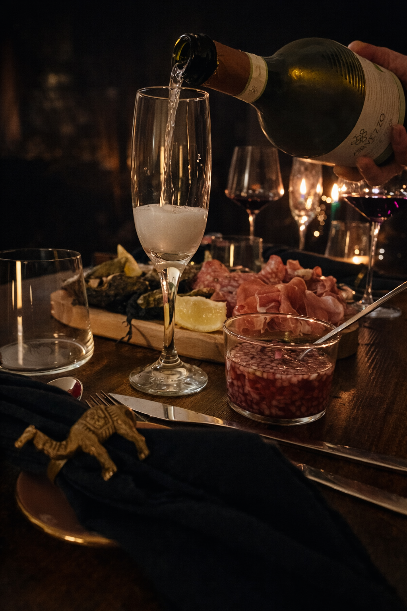
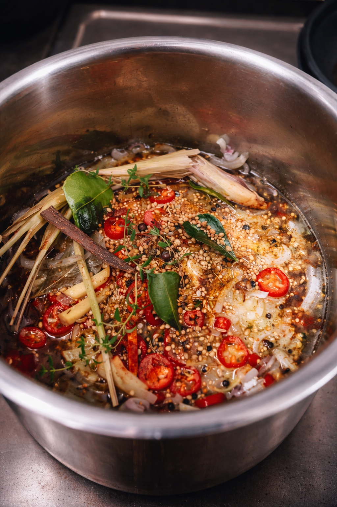
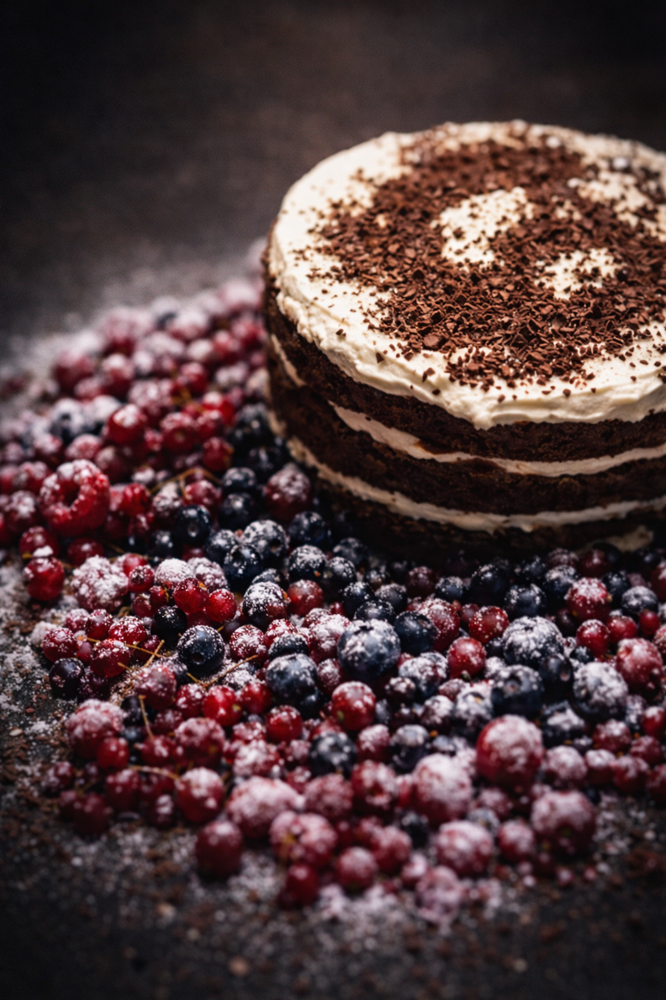
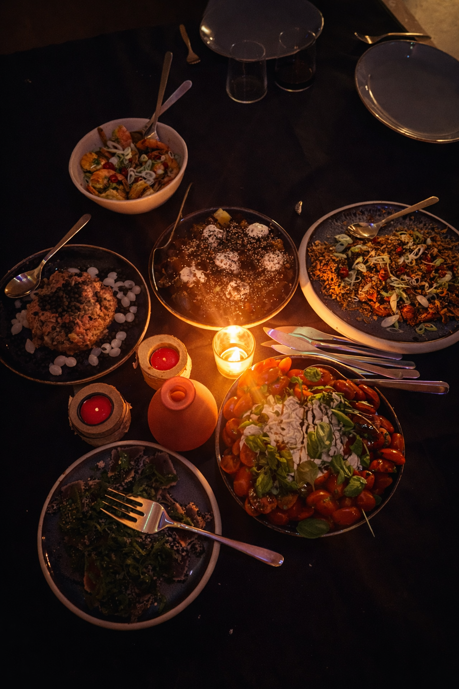
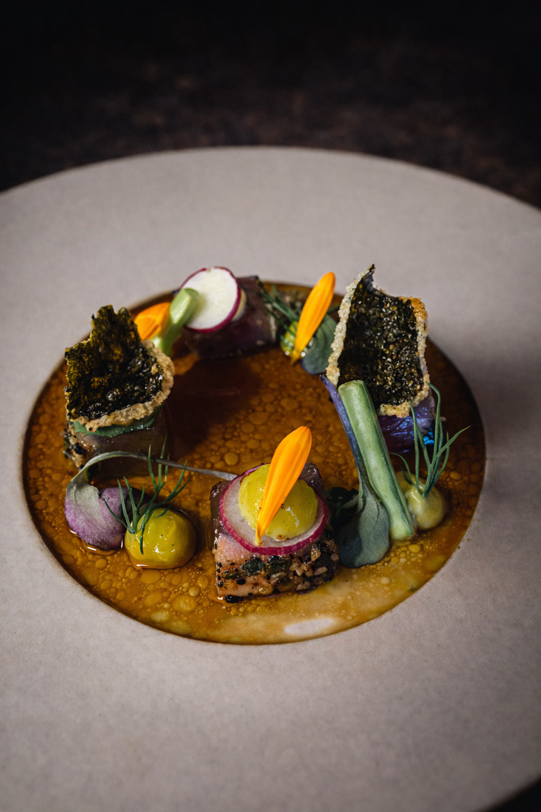
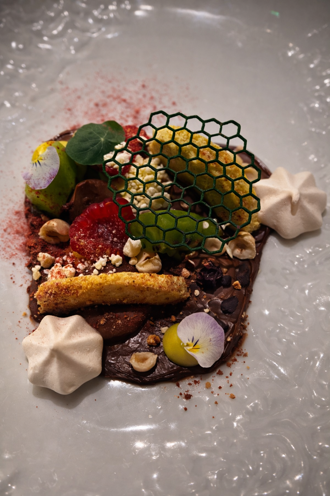
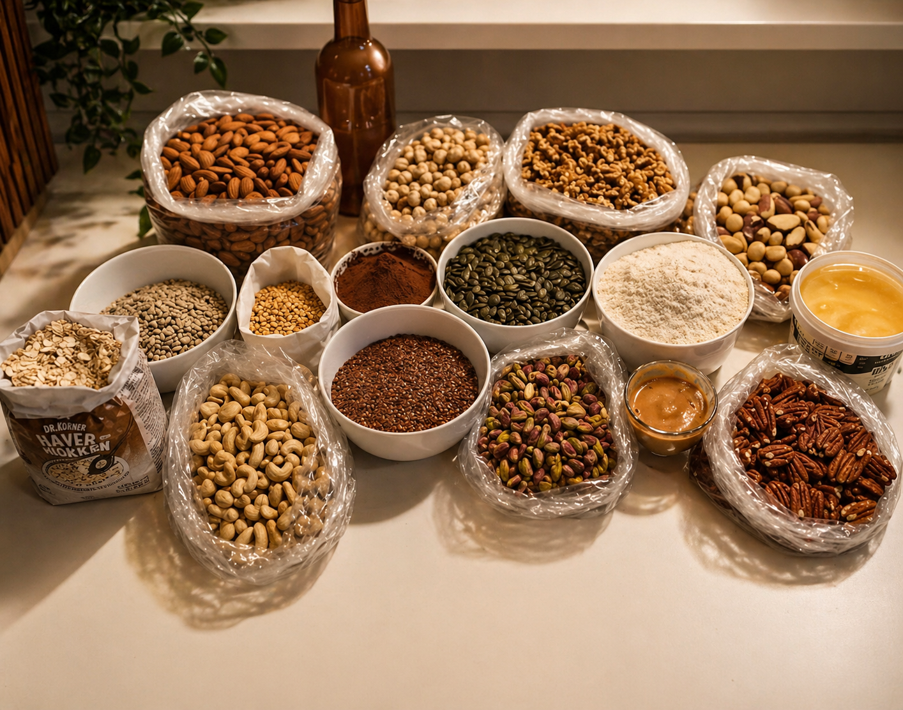
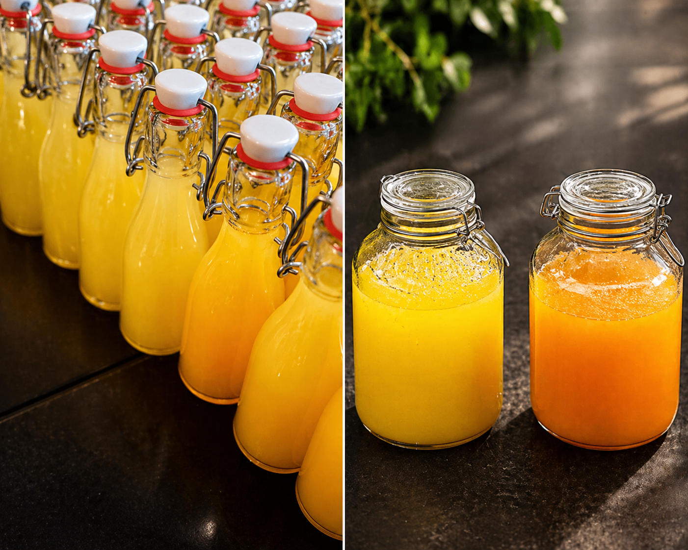
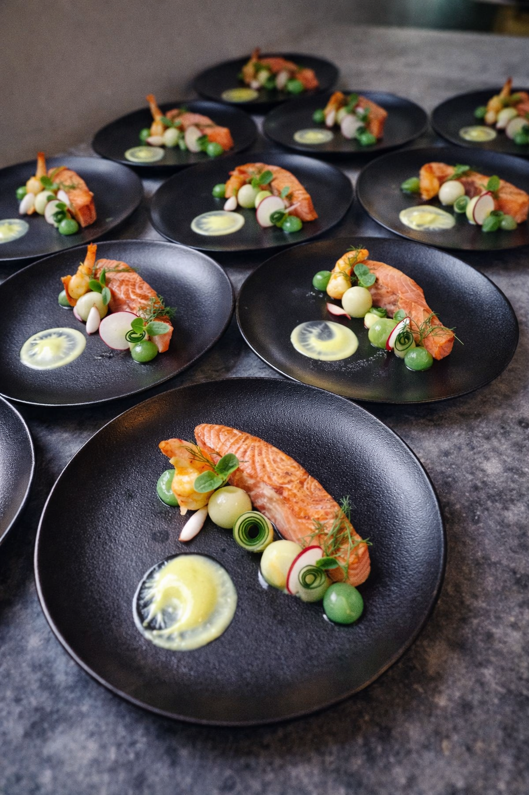
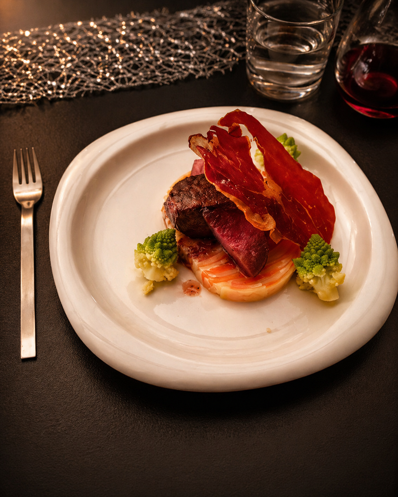